Jak v AI agentovi nastavit přístup ke konkrétnímu GitHub repozitáři, aby v něm mohl pracovat a dělat změny. Postup na třech různých agentech.
1
Claude Code v cloudu (claude.ai/code) Anthropic · přístup přes Claude GitHub App nebo token z gh
2
GitHub Copilot – cloud agent GitHub · agent zabudovaný přímo v GitHubu
3
Gemini CLI jako GitHub Action (run-gemini-cli) Google · agent běží v GitHub Actions daného repozitáře
Ukázkový repozitář: github.com/Zorvoan/agenti_napojeni-na-git
Stav dokumentace k 25. 11. 2026 · seznam zdrojů je v samostatném souboru Zdroje.pdf
Obsah
Jak číst tento návod (původ screenshotů)
Společné principy: jak agent získá přístup k repozitáři
Agent 1 – Claude Code v cloudu
Agent 2 – GitHub Copilot cloud agent
Agent 3 – Gemini CLI jako GitHub Action
Srovnání všech tří agentů
Bezpečnostní kontrolní seznam
1 Jak číst tento návod
Každý obrázek má pod sebou popisek se zkratkou, která říká, odkud pochází. Čísla v hranatých závorkách, například [4], odkazují na zdroje v souboru Zdroje.pdf.
A
Vlastní screenshot nebo výstup. Pořízeno při tvorbě tohoto návodu: skutečný výstup terminálu z cloudové relace Claude Code, která pracovala v ukázkovém repozitáři.
B
Oficiální screenshot GitHubu. Obrázek z oficiální dokumentace GitHub Docs (repozitář github/docs). Ukazuje skutečné rozhraní GitHubu, ale na ukázkovém účtu GitHubu (např. octocat).
C
Screenshot oficiální dokumentace výrobce. Pořízeno automatizovaným prohlížečem z code.claude.com, ukazuje přesný oficiální postup.
Rozhraní všech tří služeb se často mění. Názvy tlačítek a nabídek jsou uvedeny anglicky přesně tak, jak je používá dokumentace; v rozhraní je hledejte pod stejným názvem.
2 Společné principy: jak agent získá přístup k repozitáři
Aby AI agent mohl v repozitáři pracovat (číst kód, vytvářet větve, commitovat a otevírat pull requesty), potřebuje od GitHubu oprávnění. Používají se čtyři mechanismy:
Mechanismus
Jak funguje
Kdo ho používá v tomto návodu
GitHub App
Aplikace se nainstaluje na účet nebo organizaci a dostane přesně vyjmenovaná oprávnění (např. Contents: Read & write). Při instalaci lze zvolit Only select repositories, tedy jen vybrané repozitáře [9].
Claude Code (Claude GitHub App), Gemini (vlastní GitHub App)
OAuth autorizace / token uživatele
Agent jedná jménem uživatele s jeho oprávněními (např. token z GitHub CLI gh).
Claude Code (/web-setup)
Vestavěný agent GitHubu
Agent je součástí GitHubu, přístup se jen povolí v nastavení a omezí na repozitáře [5].
GitHub Copilot cloud agent
GITHUB_TOKEN v GitHub Actions
Krátkodobý token, který GitHub vytvoří pro každý běh workflow. Platí jen pro daný repozitář a oprávnění se nastavují v bloku permissions: [15].
Gemini CLI (výchozí varianta)
Tři pravidla, která platí pro všechny agenty
Princip nejmenších oprávnění. Agentovi dejte přístup jen k repozitáři, ve kterém má pracovat (volba Only select repositories), a jen ta oprávnění, která potřebuje.
Agent pracuje ve vlastní větvi a výsledek předá jako pull request. Do hlavní větve main má změny pouštět až člověk po kontrole.
Chraňte hlavní větev pravidly branch protection nebo rulesets (povinná revize, povinné testy). Dokumentace Claude Code to výslovně doporučuje, protože jeho proxy samo neomezuje, do kterých větví lze pushovat [3]. Doporučuje to i dokumentace Gemini [16].
Jak vypadá instalační dialog GitHub App s volbou Only select repositories, ukazuje obrázek u agenta 1, krok 3.
1 Claude Code v cloudu (claude.ai/code)
Claude Code v cloudu naklonuje vybraný repozitář do izolovaného virtuálního stroje u Anthropicu, provede úpravy, spustí testy a pushne vlastní větev. Z ní pak jedním klikem vytvoříte pull request [1]. Tento návod vznikl právě v takové relaci, takže kroky 5 a 6 ukazují skutečný průběh.
Předpoklady: účet claude.ai s plánem Pro, Max, Ultra nebo Team (u Enterprise prémiové místo) [1]; účet na GitHubu s repozitářem, ve kterém máte právo zápisu. Cloudové relace pracují jen s existujícími repozitáři, nový repozitář proto nejdřív založte na GitHubu (stačí s README) [1].
Krok 1: Otevřete claude.ai/code a přihlaste se
Jděte na https://claude.ai/code a přihlaste se účtem claude.ai [1].
Krok 2: Propojte GitHub (Sign in with GitHub)
Po přihlášení vás claude.ai/code vyzve k propojení s GitHubem. Budete přesměrováni na autorizační stránku GitHubu. Žádost schvalte a GitHub vás vrátí zpět [1]. Propojení se dělá jen jednou.
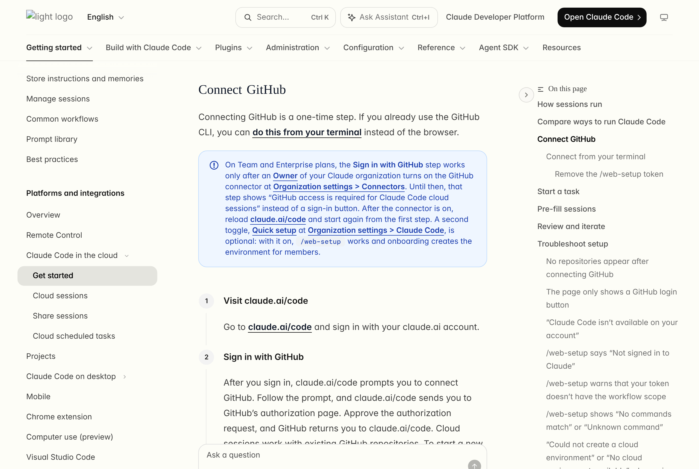
C Oficiální postup „Connect GitHub“: 1. Visit claude.ai/code, 2. Sign in with GitHub. Na plánech Team/Enterprise musí nejprve vlastník organizace zapnout GitHub konektor (Organization settings › Connectors). Zdroj: [1].
Krok 3: Udělte přístup ke konkrétnímu repozitáři (Claude GitHub App)
Samotné propojení umožní pracovat s veřejnými repozitáři. Pro soukromý repozitář musí být na něm nainstalovaná Claude GitHub App [1]:
Otevřete https://github.com/apps/claude/installations/new (nebo potvrďte výzvu během onboardingu).
Vyberte účet nebo organizaci, které repozitář patří. V organizaci může být nutný souhlas vlastníka organizace [1].
Zvolte Only select repositories a v seznamu Select repositories vyberte svůj repozitář (zde agenti_napojeni-na-git) [9].
Zkontrolujte požadovaná oprávnění a klikněte na Install [9].
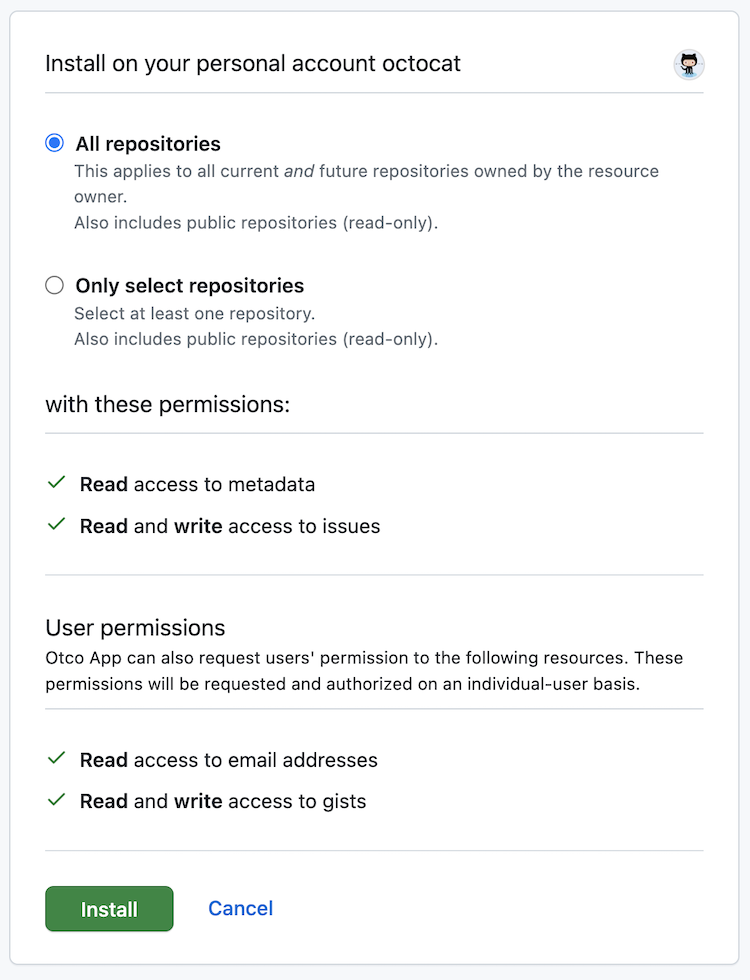
B Obecný instalační dialog GitHub App: volba All repositories / Only select repositories a seznam oprávnění, která aplikace získá. Stejný dialog uvidíte při instalaci Claude GitHub App i vlastní aplikace pro Gemini. Zdroj: [9], [17].
Instalace aplikace navíc zapíná funkci Auto-fix: Claude pak může reagovat na selhání CI a na komentáře z revize v pull requestech [1].
Alternativa pro vývojáře s GitHub CLI: v terminálu spusťte gh auth login, v Claude Code CLI se přihlaste /login a zadejte /web-setup. Token z gh se uloží šifrovaně k vašemu účtu Claude. Cloudové relace pak mají přístup ke všem repozitářům, ke kterým má přístup tento token, i bez instalace aplikace [1], [2].
C Dva způsoby, jak dát Claude Code přístup k GitHubu: GitHub App (veřejné repozitáře a soukromé repozitáře s nainstalovanou aplikací) nebo /web-setup (repozitáře dostupné tokenu gh). Zdroj: [2].
Krok 4: Prostředí (environment)
Po propojení vznikne cloudové prostředí Default s omezeným přístupem k síti (Limited): relace dosáhne jen na běžné registry balíčků a povolené domény. Na plánech Team/Enterprise prostředí vytvoříte ve formuláři Create your first cloud environment tlačítkem Create & finish [1]. V nastavení prostředí lze později přidat povolené domény, proměnné prostředí a setup script, který se spustí při startu relace [3].
Krok 5: Zadejte úkol: vyberte repozitář, větev a režim oprávnění
Pod vstupním polem klikněte na výběr repozitáře a zvolte svůj repozitář. Vedle něj můžete změnit výchozí větev [1].
Zvolte režim oprávnění: Auto (akce kontroluje klasifikátor), Accept edits (Claude upravuje a pushne větev bez ptaní) nebo Plan (nejdřív navrhne postup a čeká na schválení) [1].
Konkrétně popište úkol (soubor, funkci, očekávané chování) a odešlete ho klávesou Enter [1].
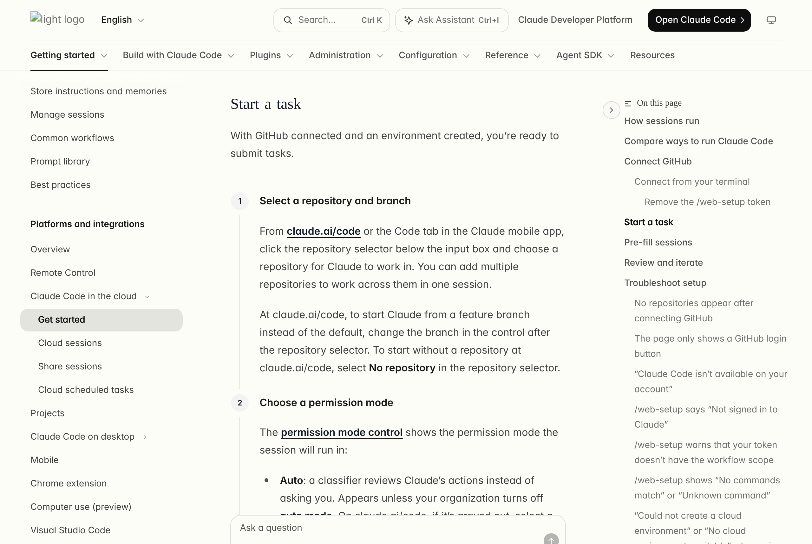
C Oficiální postup „Start a task“: výběr repozitáře a větve, volba režimu oprávnění. Zdroj: [1].
Krok 6: Agent pracuje v repozitáři a pushne větev
Claude repozitář naklonuje, provede změny a commitne je do vlastní větve (zde claude/ai-agents-github-setup-n7ew21). Tu pak pushne na GitHub. Následující výstup je skutečný průběh relace, ve které vznikl tento návod:
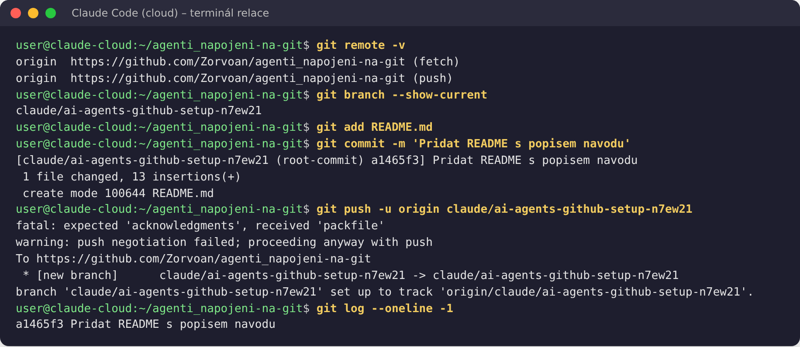
A Skutečný výstup terminálu cloudové relace Claude Code (25. 11. 2026): kontrola vzdáleného repozitáře, vytvoření commitu a git push nové větve na GitHub. Varování „push negotiation failed“ je jen informativní, push proběhl (viz další obrázek).
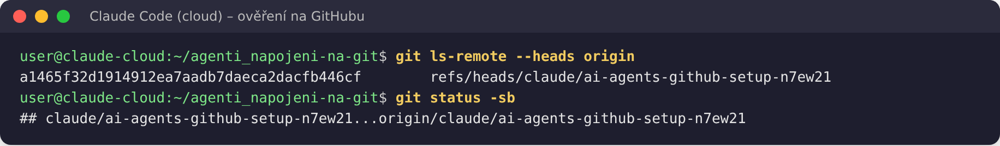
A Ověření: větev s commitem a1465f3 je na GitHubu (git ls-remote) a lokální větev je synchronizovaná se vzdálenou.
Výsledek zkontrolujete v claude.ai/code: zobrazíte si změny (diff), přidáte komentáře, vytvoříte pull request nebo pošlete další zprávu a agent pokračuje [1].
Jak to funguje uvnitř a jak přístup odebrat
Vaše skutečné přihlašovací údaje ke GitHubu se do virtuálního stroje nedostanou. Git operace jdou přes GitHub proxy, která vymění omezený pověřovací údaj za váš token. Proxy odmítne mazání větví a push tagů a obsluhuje jen repozitáře připojené k relaci [3].
Odebrání přístupu: GitHub odpojíte na claude.ai/customize/connectors [1]. Aplikaci odinstalujete nebo autorizaci zrušíte na GitHubu v Settings › Applications [1], [12].
Copilot cloud agent je zabudovaný přímo v GitHubu. Nic se neinstaluje, přístup se jen povolí pro vybrané repozitáře. Úkol mu zadáte přiřazením issue nebo z karty Agents. Agent pracuje ve větvi copilot/… a otevře pull request [4], [6].
Předpoklady: placený plán GitHub Copilot (cloud agent je dostupný ve všech placených plánech). U Copilot Business/Enterprise o použití rozhoduje politika organizace nebo enterprise [5].
Krok 1: Povolte agenta pro konkrétní repozitář
Ve výchozím stavu je agent povolen ve všech repozitářích. Přístup jen ke konkrétnímu repozitáři nastavíte takto [5]:
Vpravo nahoře klikněte na profilový obrázek a zvolte Copilot settings.
V postranním panelu v sekci Copilot klikněte na Cloud agent (přímo github.com/settings/copilot/coding_agent).
V části Policies u položky Repository access zvolte Only selected repositories.
Klikněte na Select repositories a vyberte svůj repozitář.
Na stejné stránce lze v části Partner agents zapnout i agenty třetích stran (Anthropic Claude, OpenAI Codex). Ti mají přístup ke stejným repozitářům jako Copilot cloud agent [5].
Krok 2: Zadejte úkol přiřazením issue
V repozitáři otevřete kartu Issues a vyberte issue s popisem úkolu [4].
V pravém panelu klikněte na Assignees [4].
B Pravý panel issue: sekce Assignees. Zdroj: [4].
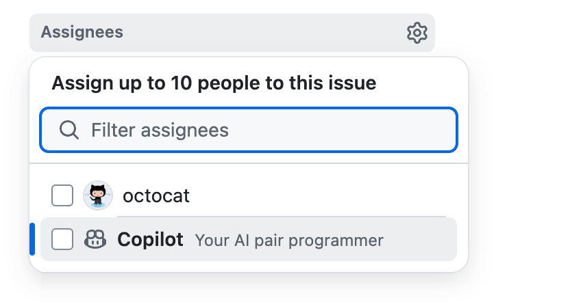
B V seznamu možných řešitelů je Copilot. Zdroj: [4].
Ze seznamu vyberte Copilot. Otevře se dialog s dalšími volbami: cílový repozitář, výchozí větev, případně vlastní agent a doplňující instrukce. Potvrďte tlačítkem Assign [4].
B Dialog „Assign Copilot to issue“: volitelný prompt, výběr repozitáře a výchozí větve, tlačítko Assign. Zdroj: [4].
Další způsoby zadání: karta Agents v repozitáři, stránka github.com/copilot, tlačítko Task na dashboardu (v rozbalovací nabídce vyberete repozitář) nebo příkaz /task v Copilot Chatu [4].
Krok 3: Sledujte práci a iterujte
Agent vytvoří větev a pull request a po dokončení vás požádá o revizi. Na další úpravy stačí v pull requestu napsat komentář s @copilot. Na komentáři se objeví reakce emoji očí (👀) a v časové ose se objeví „Copilot started work“ [4].
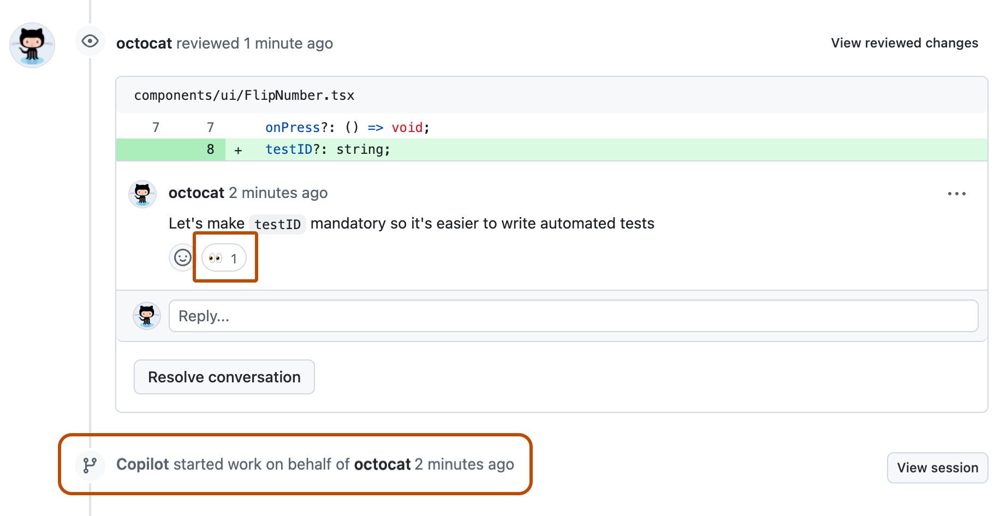
B Komentář v revizi pull requestu spustí novou práci agenta („Copilot started work on behalf of…“), průběh otevřete tlačítkem View session. Zdroj: [4].
Krok 4: Schválení spuštění GitHub Actions
Workflow (CI) se na pushe od Copilota ve výchozím stavu nespustí automaticky. Musíte je schválit tlačítkem Approve and run workflows. Správce repozitáře to může změnit v Settings › Copilot › Cloud agent (volba Require approval for workflow runs), dokumentace před tím ale varuje [8].
B Pull request od Copilota: „1 workflow awaiting approval“ a tlačítko Approve and run workflows. Zdroj: [8].
Bezpečnostní omezení agenta
Agent smí pushovat jen do jedné větve: buď do větve existujícího pull requestu (při spuštění přes @copilot), nebo do nové větve copilot/…. Platí pro něj i ochrana větví a povinné kontroly [6].
Agent nemá přístup k tajným hodnotám (secrets) z Actions. Dostane jen secrets a proměnné z prostředí copilot [7].
Přístup k internetu omezuje firewall. Když agent narazí na blokovanou adresu, upozorní na to v pull requestu [6], [13].
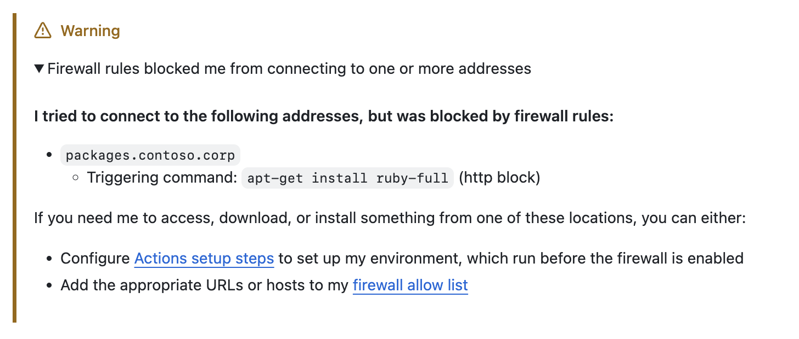
B Upozornění, že firewall zablokoval agentovi přístup k síťové adrese. Zdroj: [13].
3 Gemini CLI jako GitHub Action
Třetí přístup je jiný: agent neběží u výrobce, ale přímo v GitHub Actions vašeho repozitáře. Google poskytuje akci google-github-actions/run-gemini-cli. Agenta zavoláte komentářem @gemini-cli … v issue nebo pull requestu. Umí odpovídat, dělat revize, třídit issue a po schválení plánu i měnit kód (větev + pull request) [14], [16].
Předpoklady: repozitář na GitHubu s povolenými GitHub Actions a vlastnické/administrátorské právo k jeho nastavení; API klíč pro Gemini z Google AI Studio [14], [15].
Krok 1: Získejte API klíč a uložte ho jako secret repozitáře
V Google AI Studio vytvořte API klíč [15].
V repozitáři otevřete kartu Settings [10].
B Karta Settings v hlavičce repozitáře. Zdroj: [10].
V postranním panelu otevřete Secrets and variables › Actions, na kartě Secrets klikněte na New repository secret [10].
B Stránka „Actions secrets and variables“, karta Secrets. Sem patří GEMINI_API_KEY (a případně APP_PRIVATE_KEY). Zdroj: [10].
Krok 2: Dejte agentovi oprávnění k repozitáři
Varianta A (jednodušší): výchozí GITHUB_TOKEN. Když nenastavíte vlastní GitHub App, akce použije automatický token workflow. Ten platí jen pro tento repozitář a po skončení jobu vyprší. Oprávnění se zapisují do workflow, např. contents: write pro zápis kódu, issues: write, pull-requests: write [15].
Varianta B (doporučená): vlastní GitHub App s přesně nastavenými oprávněními [15]:
GitHub › Settings › Developer settings › GitHub Apps › New GitHub App. Vyplňte název (např. Muj-Gemini-Asistent) a Homepage URL.
V sekci Webhooks zrušte zaškrtnutí Active.
V části Repository permissions nastavte Contents, Issues a Pull requests na Read & write. Dejte jen to, co skutečně potřebujete. Klikněte na Create GitHub App.
Na stránce aplikace klikněte na Generate a private key, soubor .pem bezpečně uložte a poznamenejte si App ID.
V levém panelu zvolte Install App, vyberte účet, zvolte Only select repositories, vyberte svůj repozitář a klikněte na Install.
V repozitáři: Settings › Secrets and variables › Actions. Na kartě Variables přidejte APP_ID, na kartě Secrets přidejte APP_PRIVATE_KEY (celý obsah souboru .pem).
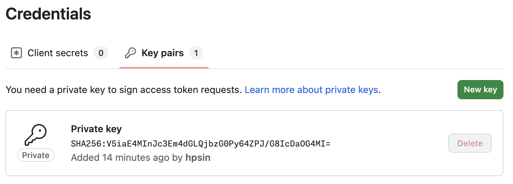
B Sekce Credentials GitHub App: vygenerovaný soukromý klíč (Private key). Zdroj: [18].
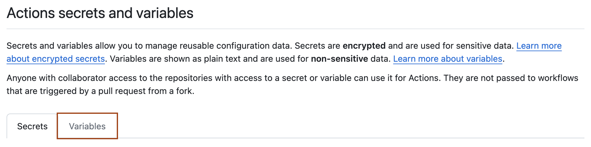
B Karta Variables: sem patří APP_ID. Zdroj: [11].
Instalace aplikace na jediný repozitář vypadá stejně jako na obrázku u agenta 1, krok 3 (volba Only select repositories).
Krok 3: Přidejte do repozitáře workflow
Nejjednodušší je spustit lokálně Gemini CLI (gemini) a zadat příkaz /setup-github. Druhá možnost je ručně zkopírovat ukázková workflow z examples/workflows do složky .github/workflows: vždy gemini-dispatch.yml a pro úpravy kódu gemini-invoke.yml a gemini-plan-execute.yml [14], [16]. Do .gitignore přidejte .gemini/ a gha-creds-*.json [14].
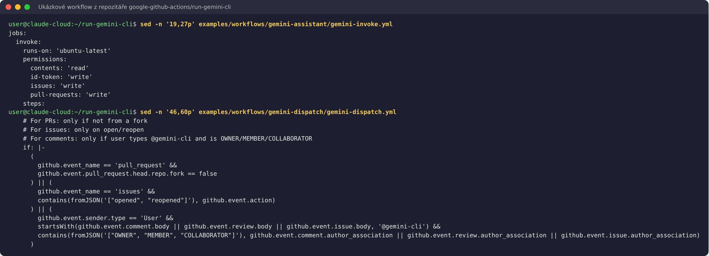
A Výňatek z oficiálních ukázkových workflow (repozitář google-github-actions/run-gemini-cli, commit c8bfcfc): blok permissions určuje, co smí agent v repozitáři dělat. Podmínka v gemini-dispatch.yml pouští agenta jen na komentáře od OWNER/MEMBER/COLLABORATOR a ne na pull requesty z forků. Zdroj: [16].
Krok 4: Zadejte úkol a schvalte plán
V issue nebo pull requestu napište komentář, např. @gemini-cli Refaktoruj funkci calculateTotal v src/utils.js [16].
Agent potvrdí přijetí. U změn kódu nejdřív zveřejní plán jako komentář [16].
Plán zkontrolujte a schvalte odpovědí @gemini-cli /approve <odkaz-nebo-ID-komentáře-s-plánem>. Samotné /approve bez odkazu se odmítne [16].
Agent vytvoří novou větev, commitne změny, otevře pull request a napíše shrnutí. Pro main doporučuje dokumentace zapnout ochranu větve [16].
6 Srovnání všech tří agentů
Claude Code v cloudu
GitHub Copilot cloud agent
Gemini CLI GitHub Action
Výrobce
Anthropic
GitHub (Microsoft)
Google
Kde agent běží
VM u Anthropicu (nebo self-hosted) [1]
Cloudový sandbox GitHubu [4]
Runner GitHub Actions vašeho repozitáře [14]
Jak získá přístup
Claude GitHub App nebo token gh přes /web-setup [2]
Povolení v Settings › Copilot › Cloud agent [5]
GITHUB_TOKEN nebo vlastní GitHub App [15]
Omezení na 1 repozitář
Instalace aplikace s Only select repositories; proxy obsluhuje jen repozitáře připojené k relaci [3]
Repository access › Only selected repositories [5]
Workflow je přímo v repozitáři; aplikace s Only select repositories [15]
Kam zapisuje
Vlastní větev (např. claude/…), PR na vyžádání [1]
Jen větev copilot/… nebo větev PR [6]
Nová větev + PR po schválení plánu [16]
Jak zadat úkol
Prompt na claude.ai/code, v aplikaci nebo claude --cloud [2]
Přiřazení issue, karta Agents, @copilot [4]
Komentář @gemini-cli … [16]
Co je potřeba zaplatit
Plán Claude Pro/Max/Ultra/Team/Enterprise [1]
Placený plán Copilot [5]
API klíč Gemini (AI Studio) + minuty Actions [14]
Odebrání přístupu
claude.ai/customize/connectors; odinstalace aplikace [1]